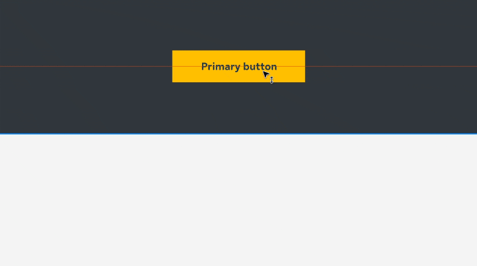

01
Helios design system
Helios is Sun Life's global design system, developed to replace and modernize the previous system. It enables teams to build consistent, accessible, and high-quality digital experiences across all Sun Life digital products.
background
As Sun Life expanded its digital ecosystem across different markets and product teams, the need for a more scalable and unified design approach became increasingly important.
Before Helios, the existing design system could no longer support the growing needs of digital products. Different teams created their own patterns and solutions, leading to inconsistent user interfaces and fragmented experiences across platforms. It also made collaboration between designers and developers more challenging, resulting in slower delivery and increased maintenance efforts.
Before Helios, the existing design system could no longer support the growing needs of digital products. Different teams created their own patterns and solutions, leading to inconsistent user interfaces and fragmented experiences across platforms. It also made collaboration between designers and developers more challenging, resulting in slower delivery and increased maintenance efforts.
process
Creating Helios was not simply about rebuilding a component library. It required a complete evaluation of the existing digital ecosystem, defining a new design foundation, establishing scalable components, and ensuring the system could support future product growth.
Throughout the process, communications between designers, developers, and product teams played an important role in shaping the system, allowing us to share ideas, gather feedback, and continuously improve the experience together.
Throughout the process, communications between designers, developers, and product teams played an important role in shaping the system, allowing us to share ideas, gather feedback, and continuously improve the experience together.
/1
understanding current challenges
Before defining the new system, I conducted an extensive review of the existing design system, websites, and digital products to identify usability, visual, and scalability issues.
Through analyzing existing interfaces and collaborating with product teams, we identified inconsistencies across products, including variations in component usage, spacing, typography, interaction patterns, and visual hierarchy. These findings helped establish the foundation for what Helios needed to solve and prioritize.
Through analyzing existing interfaces and collaborating with product teams, we identified inconsistencies across products, including variations in component usage, spacing, typography, interaction patterns, and visual hierarchy. These findings helped establish the foundation for what Helios needed to solve and prioritize.

Old design system

Old public site
/2
building design foundation
After established the new visual direction that aligned with Sun Life’s brand identity, I focused on creating the core foundations of Helios, including grid systems, typography, color systems, spacing principles, and layout structures.
These foundations served as the building blocks for the entire design system, ensuring every component was created with consistency, accessibility, and scalability in mind.
These foundations served as the building blocks for the entire design system, ensuring every component was created with consistency, accessibility, and scalability in mind.

150+ Decorative icons / 160+ Action icons

Colour palette

Spacing principles to guide the spacing between every elements

Grid system for page layout and breakpoint responsiveness

Typography system for good readability and hierarchy control

Animation principles that ensure consistency and enhance usability
/3
components & patterns
Beyond visual consistency, each component was designed with usability and flexibility in mind. We defined component behaviors, states, and interaction patterns, ensuring components could provide predictable experiences across different platforms.
To ensure components are usable by everyone, each component underwent continuous refinement based on feedback from designers, developers, and product teams.
To ensure components are usable by everyone, each component underwent continuous refinement based on feedback from designers, developers, and product teams.

Scalable across all breakpoints and devices

Variants and states

Configurable for designers

Animated prototypes for visualizing component interactions
/4
accessibility
Accessibility was one of the highest priorities throughout the development of Helios. As a core value at Sun Life, every component and interaction was designed to meet high accessibility standards while delivering an inclusive and consistent experience for all users.
To strengthen my understanding of accessibility standards and best practices, I completed the W3Cx Web Accessibility course on edX, allowing me to apply accessibility principles more effectively throughout the design system.
To strengthen my understanding of accessibility standards and best practices, I completed the W3Cx Web Accessibility course on edX, allowing me to apply accessibility principles more effectively throughout the design system.
Accessibility considerations were incorporated into component design, including:
WCAG 2.2 AA colour contrast, keyboard navigation support, visible focus states, screen reader compatibility, clear labels and instructions and sufficient touch target size etc.
WCAG 2.2 AA colour contrast, keyboard navigation support, visible focus states, screen reader compatibility, clear labels and instructions and sufficient touch target size etc.
/5
implementing design tokens
In 2023, Figma has released a update that allows creation of variables and design tokens. To improve scalability and maintainability, we leveraged Figma variables and design tokens to restructure Helios’ foundations and components. This created stronger connections between design decisions, allowing updates to propagate more efficiently across the entire system.
By introducing tokens, Helios will be easier to maintain, adjust, and scale to serve new products and new requirements.
By introducing tokens, Helios will be easier to maintain, adjust, and scale to serve new products and new requirements.

Figma Variables

Tokens example of color, size, typography and spacing. We also created easing and duration tokens for animation and prototyping.

Component style changes based on variable mode

Token structure


enabling teams through documentation
A successful design system is not only defined by its components, but also by how easily the teams can understand and adopt it.
To support designers and developers, I created comprehensive documentation covering component usage, behaviors, interaction guidelines, accessibility requirements, and implementation best practices. Each component included clear guidance on when and how it should be used, helping teams make consistent design decisions across products.
To support designers and developers, I created comprehensive documentation covering component usage, behaviors, interaction guidelines, accessibility requirements, and implementation best practices. Each component included clear guidance on when and how it should be used, helping teams make consistent design decisions across products.

bringing Helios into real products
Using Helios as the design foundation, I contributed to the design of multiple global websites and mobile applications, helping multiple teams transition from legacy interfaces to a more modern and consistent user experience.


Let’s collaborate.
© Tony Tsui 2026